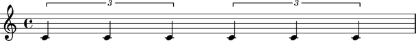

_LeafDurationInterface class The Abjad _LeafDurationInterface class manages note, rest, chord and skip duration.
abjad> measure = Measure((4, 4), [ ]) abjad> measure.append(FixedDurationTuplet((2, 4), Note(0, (1, 4)) * 3)) abjad> measure.append(FixedDurationTuplet((2, 4), Note(0, (1, 4)) * 3)) abjad> note = measure.leaves[0] abjad> show(measure)
Read / write attribute defined here.
Optional LilyPond multiplier to attached leaf.
Returns Abjad Rational.
Accepts Abjad duration token, None.
abjad> note.duration.multiplier is None True
abjad> note.duration.multiplier = (1, 2) abjad> print(note.format) c'4 * 1/2
abjad> note.duration.multiplier = None abjad> note.duration.multiplier is None True
Read-only attribute inherited from _DurationInterface.
Returns Abjad Rational.
Represents leaf duration prior to consideration of any tuplet or measure scaling.
abjad> note.duration.preprolated Rational(1, 4)
Read-only attribute inherited from _DurationInterface.
Returns Abjad Rational.
Represents scaled leaf duration accounting for any tuplet or measure scaling.
abjad> note.duration.prolated Rational(1, 6)
Read-only attribute inherited from _DurationInterface.
Returns Abjad Rational.
Represents scaling factor donated by all tuplets and measures enclosing leaf.
abjad> note.duration.prolation Rational(2, 3)
Read / write attribute defined here.
Returns Abjad Rational.
Accepts Abjad duration token.
Represents the written, face value of leaf without consideration of LilyPond multipliers or tuplet or mesaure scaling.
Abjad written duration corresponds most closely to notional intuition of duration.
abjad> note.duration.written Rational(1, 4)
abjad> note.duration.written = (3, 8) abjad> note Note(c', 4.)
rewrite(arg)
Public method defined here.
Changes written duration of leaf to arg while leaving preprolated duration of leaf the same through multiplier adjustment.
abjad> note.duration.written = (1, 4) abjad> note.duration.rewrite((1, 16)) abjad> note.duration.written Rational(1, 16) abjad> note.duration.multiplier Rational(4, 1)
See the
_LeafDurationInterfaceclass inleaf/duration.pyfor implementation details.